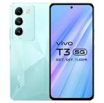
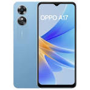
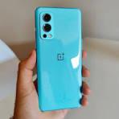

Google phones can refer to two different things:
Phones Running Google’s Android Operating System:
Any phone that runs on Google’s Android operating system is considered a “Google phone.” Android is an open-source mobile operating system developed by Google and used by various manufacturers to power their smartphones.
These phones include a wide range of brands and models, each customized by the manufacturer but based on the Android platform.
Phones Manufactured or Co-Manufactured with Google:
Google has collaborated with manufacturers to create specific phones under its own brand. These phones are designed to showcase the best of Google’s software and services.
Notable examples include:
Android Dev Phones: These were early Android developer smartphones co-manufactured with HTC. The HTC Dream (released in December 2008) and the HTC Magic (released in November 2009) were part of this series1.
However, when people commonly refer to “Google phones,” they often mean the latter category—phones specifically engineered by Google. Let’s dive deeper into this:
Google Pixel Phones:
The Pixel series is Google’s flagship line of smartphones.
Key features of Google Pixel phones:
Software Integration: Pixel phones run a clean version of Android with minimal bloatware. They receive timely updates directly from Google.
Camera Excellence: Despite using the same primary camera sensor for several generations, Pixel phones are known for their exceptional photo quality due to advanced software processing.
Google AI: Pixel phones leverage Google’s artificial intelligence (AI) capabilities for features like real-time language translation, smart search, and more.
Regular Updates: Google commits to providing up to 7 years of OS, security, and feature updates for Pixel phones.
Notable models include the Pixel 8, Pixel 8 Pro, and Pixel 8a2.
In summary, Google Pixel phones stand out for their clean software experience, camera prowess, and seamless integration with Google services.

Vivo is a renowned brand of cutting-edge smartphones and accessories. The vivo X80 Series, vivo V23 Series, and vivo TWS Air offer delightful and intelligent experiences1. Let’s explore more about Vivo:
Brief History of Vivo:
Founded in 2009, Vivo initially sold its phones exclusively in China.
In 2014, the company expanded its reach to several more countries, primarily in South Asia.
Vivo released its first smartphone in Europe in 2020 and now sells devices in countries like the UK, France, Italy, Spain, Colombia, Chile, and Australia2.
Vivo Phone Series:
X Series: Vivo’s flagship line, featuring top-end specs at mid-range prices. Notable models include the Vivo X60.
These phones often come with camera innovations, such as physical gimbal sensors for improved optical image stabilization.
Y Series: Dependable, low-cost devices. Higher numbers correlate to better specs and higher prices.
Examples include the Vivo Y70 and Y20s.
S- and V-Line: Introduced in China and later in regions like Europe. These phones have been part of Vivo’s lineup for a long time2.
Vivo aims to make a significant impact globally, and we can expect more impressive Android phones from the company in the future.

Oppo is one of the Chinese phone brands that has been gaining popularity in the West. Let’s explore more about Oppo and its smartphones:
Brief History of Oppo:
Oppo was founded in 2004 and initially focused on the audio devices market.
In 2008, Oppo launched its first mobile phone, which featured a distinctive smiley face on its rear.
The company continued to see growth and now sells products in around 40 different countries worldwide1.
Product Lines:
Oppo sells handsets under several key lines:
Find Series: Positioned as premium mobiles, the Find series includes models like the Oppo Find X2.
These phones feature top screen specs, bespoke camera sensors from Sony, and often command high prices.
Reno Series: Known for their camera capabilities and innovative features.
A Series: Offers a range of options, including mid-range and budget-friendly devices.
Oppo has also showcased concept devices like the Oppo X Nendo and Oppo X 20211.
Affiliation with BBK Electronics:
Oppo is affiliated with tech conglomerate BBK Electronics, which also owns brands like OnePlus and Vivo.
Some products from Oppo and OnePlus share similarities, indicating shared research and development or production1.
In summary, if you’re a fan of premium-looking smartphones, top camera capabilities, and screen innovations, it’s worth keeping an eye on Oppo and the devices it launches!
Xiaomi is a Chinese electronics manufacturer that has gained significant prominence in recent years. You’ve likely heard of the brand due to its impressive range of smartphones, including models like the Xiaomi 12 Pro, as well as its smartwatches such as the Xiaomi Watch S11. Let’s delve into more details about Xiaomi phones:
Xiaomi Mi Line:
The Xiaomi Mi line represents the company’s flagship smartphones. These devices feature high specifications and often introduce new camera advancements.
Xiaomi typically releases both a Lite version (for budget-conscious users) and a higher-end version of the main phone.
Approximately six months later, they follow up with a ‘T’ version (or multiple spin-offs) that further expands the Mi line to cater to various price points.
Additionally, Xiaomi offers the Mi Mix line, which includes devices like foldable phones (resuscitated in 2021) and the Mi Note line (mid-range spin-offs with great value-for-money)2.
Sub-Brands:
Xiaomi also operates several sub-brands:
Redmi: Known for budget-friendly smartphones.
Black Shark: Focused on gaming phones.
Pocophone: Introduced in 2018, offering high performance at an affordable price.
While technically owned by Xiaomi, both Black Shark and Redmi downplay their connection to the parent company2.
Global Reach:
Xiaomi started selling its phones in Australia in 2014 and expanded to the United Kingdom in 2018.
Although the company sells smart home products in the US, it does not currently offer smartphones there2.
Whether you’re looking for flagship features, budget-friendly options, or gaming-centric devices, Xiaomi has a diverse lineup to choose from!
Motorola is a brand that has left an indelible mark on the mobile phone industry. Let’s explore some key aspects of Motorola phones:
Legacy and History:
Motorola was once a prominent player in the mobile phone market. It produced iconic devices, including the world’s first mobile phone.
During the 1990s, Motorola held the title of the largest seller of mobile phone handsets globally1.
Product Lines:
Motorola Edge 40 Pro: Released in April 2023, the Edge 40 Pro stands out as the best Motorola phone currently available. Its features include:
Slim and light design
Vibrant, bright screen
Super-fast charging and long battery life
However, Android updates are not guaranteed, and the camera performance is underwhelming despite impressive specs2.
Other Motorola Phones: The brand offers a diverse lineup, catering to various needs and preferences. From classic candy bar smartphones to clamshells, Motorola has something for everyone.
If you’re looking for budget-friendly options, solid hardware, and even foldable phones, Motorola has you covered3.
Pixel-Like Experience:
Interestingly, the Motorola Edge 40 Pro provides a Pixel-like experience without being a Google Pixel handset. It combines the latest specs with a comfortable design, making it a compelling choice for users2.
In summary, Motorola continues to innovate and deliver value across its phone lineup. Whether you’re after flagship features or budget-friendly options, Motorola has a phone for you!

OnePlus is a phone brand with a passionate fan base, known for its commitment to delivering premium technology and challenging industry norms. Here’s what you need to know about OnePlus:
Founding and Philosophy:
Founded in 2013, OnePlus operates around the bold mantra of “Never Settle.”
The company consistently creates premium devices and software that prioritize the best user experience possible1.
Product Lineup:
Flagship Phones: OnePlus’ flagship line includes numbered models (e.g., OnePlus 7, OnePlus 8).
These phones offer top-tier features and specs, often accompanied by a “Pro” version for high-mid-range and premium markets.
OnePlus Nord Series: These devices deliver impressive speed and performance while maintaining competitive prices.
Smart Compromises: OnePlus strikes a balance between performance and affordability, making its phones attractive to users who seek flagship-like experiences without the premium price tag2.
In summary, OnePlus continues to innovate, challenge conventions, and provide exceptional user-centric technology.